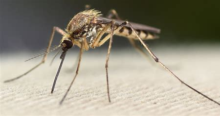

 El género Ochlerotatus, que anteriormente formaba parte del género Aedes, ha sido reclasificado con base en estudios morfológicos y moleculares. Este género incluye numerosas especies que se encuentran principalmente en regiones templadas y boreales, aunque también hay representantes en zonas tropicales. Los Ochlerotatus tienen una historia evolutiva que se remonta a ambientes húmedos y boscosos, y muchas de sus especies han desarrollado mecanismos adaptativos para resistir climas fríos o secos mediante la diapausa de sus huevos.
Uno de los aspectos evolutivos más interesantes de este género es su capacidad para resistir condiciones adversas. Algunas especies depositan sus huevos en suelos húmedos donde permanecen latentes hasta que las lluvias los activan. Esta estrategia les permite aprovechar condiciones climáticas temporales para completar su ciclo reproductivo de forma eficaz.
Ochlerotatus ha tenido una importancia creciente en salud pública, particularmente en regiones de Norteamérica y Europa, donde ciertas especies como Ochlerotatus triseriatus son vectores de enfermedades virales. A diferencia de otros mosquitos más urbanos, muchos Ochlerotatus prefieren hábitats naturales, como bosques, charcas y áreas rurales, lo que dificulta su control.
El ciclo de vida de los mosquitos del género Ochlerotatus es típico de los culícidos, con cuatro etapas: huevo, larva, pupa y adulto. Las hembras colocan sus huevos en lugares que suelen inundarse periódicamente, como depresiones del terreno, huecos en árboles o contenedores naturales. Los huevos pueden permanecer secos durante meses hasta que el agua activa su desarrollo.
Las larvas se desarrollan en el agua, donde pasan por cuatro instares antes de convertirse en pupas. Estas últimas, aunque no se alimentan, son activas y se preparan para la emergencia del mosquito adulto. El proceso completo desde huevo hasta adulto puede durar entre una y tres semanas, dependiendo de las condiciones ambientales.
Los adultos tienen un comportamiento de vuelo crepuscular o diurno, y muchas especies muestran una fuerte preferencia por la sangre de mamíferos, incluidos los humanos. Esta alimentación es esencial para la producción de huevos y también los convierte en vectores de patógenos virales como el virus de La Crosse o el virus del Nilo Occidental.
Enfermedad viral transmitida principalmente por Ochlerotatus triseriatus. Puede causar encefalitis, especialmente en niños, con síntomas como fiebre, vómito, convulsiones y en casos graves, daño neurológico.
Aunque no son los vectores principales, algunas especies de Ochlerotatus han sido identificadas como transmisoras secundarias de este virus, que puede provocar fiebre, dolores musculares, erupciones cutáneas y, en casos graves, meningitis o encefalitis.
El mosquito Ochlerotatus causa picaduras con enrojecimiento intenso y fuerte picazón. A veces produce una pequeña ampolla.